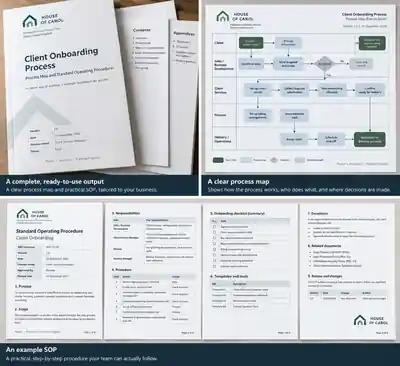

The real process becomes visible. We map what people actually do, including the workarounds, rescue points and important exceptions.
SOP & Process Design Sprint
One recurring process, properly sorted out.
Use this when the work still gets done, but only because somebody keeps chasing, remembering, explaining or stepping back in. We take one recurring process, work out how it really runs, redesign the weak hand-offs and turn the result into a practical method another person can follow.
For: organisations in England and Wales where one recurring operational process crosses several people and has become difficult to run consistently, delegate or hand over.
£1,500fixed fee
One recurring process. One named process owner, current-state review, improved process, practical SOP and handover.
Remote delivery. Normally within 10 working days after kick-off and receipt of the agreed minimum inputs. Customer-caused delay pauses the timetable.
The value is in diagnosing and redesigning the process — not simply typing up the way it already works.
What changes
The process stops depending on invisible knowledge.
Ownership becomes clearer. The improved route shows who does what, where hand-offs happen and which decisions need an owner.
The method becomes usable. The process map and SOP describe the redesigned way of working rather than preserving the existing confusion.
Handover is explicit. You leave knowing what can be adopted immediately and which remaining actions or decisions still sit with your organisation.
What you will receive

Current-state process map
One view of how the agreed process really moves today, including roles, hand-offs, information, decisions and important exceptions.
Improved process
A clearer future route with responsibilities, control points and an explicit path for important exceptions.
Practical SOP
One usable operating procedure aligned to the improved process, covering the normal route and the material exception route.
Handover and next actions
A remote walkthrough of the finished work, including any implementation actions, dependencies or decisions that remain with your organisation.
See a worked example
What does “sort out one process” actually look like?
A fictional client hand-off shows the difference between documenting a messy process and redesigning the ownership, minimum information and exception route so another person can run it.
Fictional illustrative example only. It is not customer evidence and does not claim a real-world result.
See the process exampleA defined engagement
The boundary is agreed before the sprint starts.
- Service type
- SOP & Process Design Sprint
- Delivery
- Remote
- Pricing
- £1,500 fixed
- Scope
- One defined recurring process and one named process owner
- Discovery
- Up to 90 minutes
- Handover
- Up to 60 minutes
- Timing
- Normally within 10 working days once the agreed inputs are available. Customer delay pauses the timetable.
- Included
- Current-state review, improved process, process map, SOP, responsibilities and control points, handover and one in-scope correction cycle

What needs to be in place?
One named process owner, access to enough representative evidence to understand the process, and timely factual clarification where evidence conflicts.
You remain responsible for the accuracy of the information you supply and for deciding whether and how to implement the finished process.
What is outside the scope?
Organisation-wide transformation, multiple unrelated processes, live system implementation, ongoing implementation management, and regulated, safety-critical or other high-consequence process redesign are outside the standard sprint.
The sprint does not provide legal, regulatory, tax, safety, information-security or accreditation certification.
Is this the right service?
It works best when the process repeats, involves more than one person or role, and has become dependent on memory, chasing, informal workarounds or regular manager rescue.
If one competent manager already understands a simple, stable, low-consequence procedure and can document it clearly, a £1,500 sprint is probably more than you need.
What does House of Carol not promise?
We do not promise a particular saving, ROI, productivity gain or commercial result. The sprint delivers process-design work and a usable operating method; real-world benefits depend on implementation and use.
Start with the process
Which recurring process keeps pulling somebody back in?
Tell us what the process is, where it tends to go wrong and why it matters now. We will confirm whether this bounded £1,500 sprint fits before anything is agreed.